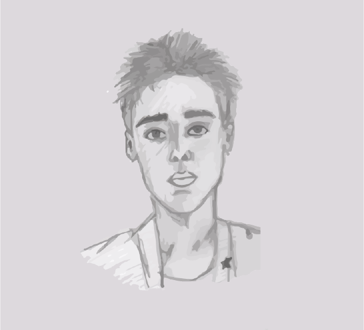
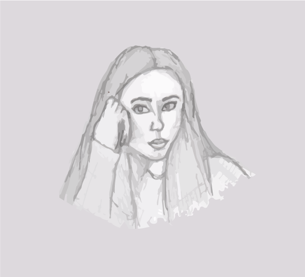
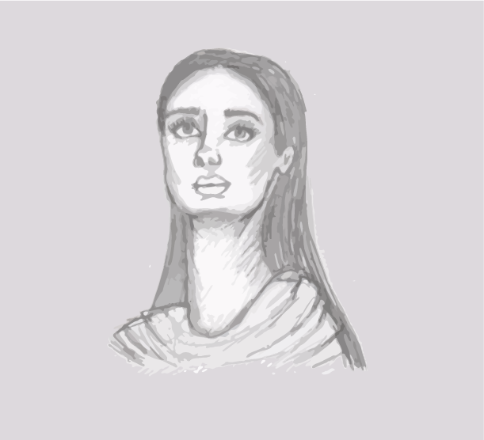
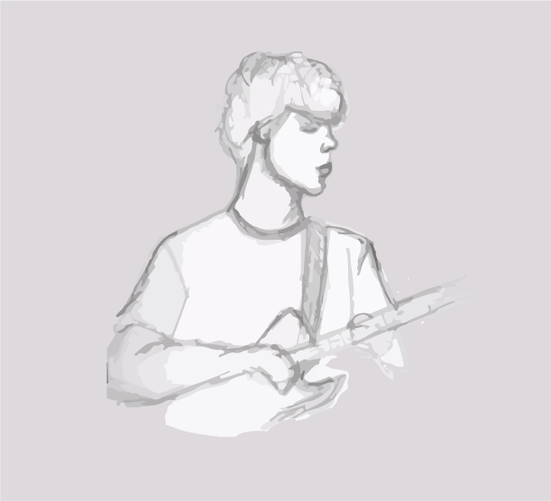

portraits
Portraits have always been my favorite thing to draw. I found a love for drawing portraits when I was in middle school, and haven't stopped since. After taking a Drawing 1 class in college, my skills got better. During the course, I was taught how to focus on shapes, shadows, and features. This has helped me improve my portrait skills, even if I am just sketching.
These 4 portraits were drawn in my sketchbook with graphite. I used images I took at a concert, images from Instagram, and myself in a mirror as inspiration. I scanned them and traced the image in Illustrator, creating a clean but still sketch-like image. I cleaned up some lines and added a colored background to help the drawings stand out.



